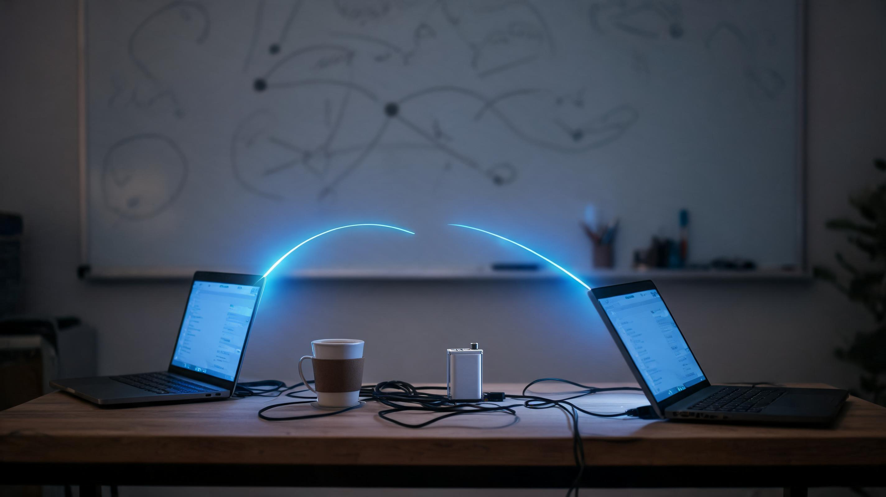

豆摇峰 · 第十二期
把自己放进反馈回路
从健康复盘、旅行地图到黑客松和后训练
先让事情跑起来，再让反馈把方向校准
2026.06.21 · 白豆 · 摇摇 · 李墨玩 · 空空做客
SCROLL
Chapter 01
空空上线：一场从温度开始的四人局
这一期从很生活化的试麦和天气开始。空空在北方的冷天里上线，摇摇刚办完健身卡就感冒，白豆还在整理一趟旅行攻略。等李墨玩进来打完招呼，豆摇峰变成了一个四人局。
但很快，闲聊背后的线索就露出来了：大家都在处理一种相似的东西。健康数据、面试流程、旅行信息、视频生成、黑客松协作、AI 新词、重复工作的疲惫，表面上很散，底层都在问同一个问题：怎样把一个模糊的状态，放进一个能被观察、能被调整、能继续跑下去的回路里？
· · ·
Chapter 02
先把身体变成一个可讨论的项目
白豆这周继续试语音写作，但主题从泛泛的表达练习，落到了自己的健康数据上。他先讲一遍自己的理解，再让 AI 把口述整理成演讲脚本和幻灯片。这样一来，语音写作不只是“把话变成文字”，而是给自己一个可以看见、可以复查、可以继续迭代的锚点。
「我讲的时候脑子里会有一种锚定感。先整体说一遍，再让它根据我的思路写成演讲脚本和 PPT。」
— 白豆
体检结果里有一些代谢和生活方式相关的信号，白豆没有把它们处理成焦虑，而是处理成一个项目：先理解指标，再拆成睡眠、饮食、锻炼几个方向。一旦身体被放进可观察的回路里，改变就不再只靠“下决心”。
· · ·
Chapter 03
同样是读东西，手机是消费，电脑是改造
白豆还分享了一个很小但很关键的习惯变化：读文章时不再只拿手机刷，而是打开电脑白板，把关注的博主、文章、观点拖到同一个空间里，重新命名、串联、提问。
「手机上 app 再多，更多是在消费信息；电脑屏幕会让我进入工作的状态，可以去改信息。」
— 白豆
他把几篇文章统一到“心力”这个问题下面：为什么有些人能持续行动，为什么有些人只是被社会和文化默认程序推着走？这里面还有一个让他印象很深的判断：做事的人如果只是为回报而动，很容易把自己工具化；真正能长期做下去的人，往往是这件事的发烧友。
这和本期的主线很贴合：不是多看一点信息，而是把信息放进自己的问题系统里，让它能反过来推动自己行动。
· · ·
Chapter 04
面试别人，也是在面试自己的判断力
这周白豆开始参与招聘。他原本觉得招聘只是筛人，做了之后发现，面试其实也是一种学习：候选人的经历、作品集和回答，会反过来触发自己对岗位、价值和表达方式的判断。
简历要为岗位而写
一批简历放在一起时，能不能让人迅速看见“为什么适合这个岗位”，差异会非常明显。
作品集暴露真实程度
真正做过的人愿意展示细节，也更容易回答追问；只停留在概念层的人，很快会露出空洞。
AI 能先做纵向比较
把 PDF 简历、作品材料交给视觉模型和 Codex 做初筛，再放进表格里比较，能先建立一个粗颗粒判断。
摇摇补充了她自己的面试流程：让 GPT 基于简历生成问题，自己筛选问题，面试后再把对话稿发回去，让它同时评价候选人和自己的提问表现。面试变成了一个双向训练回路。
· · ·
Chapter 05
把朋友的推荐，变成一张能导航的地图

朋友推荐的地点，只有被结构化之后，才真的能在路上使用
白豆展示了一个旅行攻略小工具：朋友推荐了很多地点，原本散落在聊天截图、备注和地址里。白豆把截图交给视觉模型做 OCR，再整理成表格，让工具搜索经纬度，最后嵌入地图。手机上点一下，就能跳到点评、搜索或导航。
「有时候你就想知道，朋友推荐的这些东西在附近哪里。店太多，我懒得一个个导入，就想 AI 能不能帮我们完成这一步。」
— 白豆
空空第一反应是：这可以发小红书。李墨玩则想到，之后微信里的 agent 如果能直接生成地图小程序，这件事会更顺。这里的关键不是“又做了一个地图”，而是把人类推荐转成机器可处理的数据，再转回人类可以行动的界面。
· · ·
Chapter 06
视频不再一帧帧抠，而是作为项目来跑
白豆这周还把视频生成工作流推进了一步。以前他是在视频平台的对话框里，一段一段写提示词、出图、改图、再延展。这次则把整个视频当成一个项目交给 Codex：先整体规划，再生成参考图，再把参考图作为图生视频的输入。
「以前我脑子里只有关键画面的模糊认识。这次它能从宏观上把整个画面的提示词写好，再一段一段微调。」
— 白豆
这个变化让他最舒服的地方，是参考物被系统性保存下来。人物有参考图，场景有参考图，草药、道具、动作都有独立素材。当素材、提示词和视频片段都被纳入同一个项目，创作就不再靠临场手感，而开始像一条可复用的生产线。
· · ·
Chapter 07
黑客松：把两位同事当成 subagent

人机协作不是一个人全会，而是把合适的人放到合适的位置
摇摇上周没来，是因为参加黑客松。她本期最核心的两个词是：分工协作和价值展现。她负责 AI 数字化牵头，需求很多，但真正被黑客松逼到极限时，才发现自己需要把人组织成一套运行系统。
「他们就像两个 subagent。我需要把思路讲清楚，然后在过程中把控一下，最后发现比一个人做更有效率，交付质量也更好。」
— 摇摇
项目本身像一个电化学参数校准 loop：上传数据，模型画图，提取参数，再让曲线和原始数据不断靠近。这个 loop 也出现在团队协作里：摇摇提出方向，懂电池的人补专业判断，懂 agent 的人搭建执行，最后大家共同校准。
· · ·
Chapter 08
做事从 0 到 1，讲事可以从 0.5 开始
黑客松真正让摇摇意识到的，不只是怎么做，而是怎么讲。她原本的讲述顺序很自然：电池很重要、研发很难、所以我们要帮助研发。但这个顺序太平了，评委听完不会立刻知道“为什么现在就该在意”。
「做事情要有规划，要从 0 到 1；但讲事情的时候可以从 0.5 到 1，再回到 0。你一开始先讲我们现在做了什么。」
— 摇摇
她最后把开头改成先讲价值：让研发更知道用户真实使用工况下的状态。这个价值一出来，再回头讲技术和流程，听众就有了入口。白豆也补了一句电影感的类比：好电影开场往往不是“从前有个故事”，而是直接给你一个正在发生的运动场景。
这一章和 EP11 的“干货包装”接上了：不是篡改事实，而是把真实价值放到别人能进入的位置。
· · ·
Chapter 09
流程重构不要等完美，先让它跑起来
摇摇继续聊到流程重构。她不同意一开始就把大流程拆成极细、极完整的几千个框，因为那样看起来严谨，却很难执行。尤其在生产工程里，很多卡点要靠真实执行才会暴露。
「流程重构这件事情，你先跑起来。试验过程中碰到卡点，再同步去开发。人可以参与进来，不需要一开始就百分百交给 AI。」
— 摇摇
更难的是人和人之间的分歧。她发现自己并不总是能听进去不同意见，尤其当事情没有按自己的规划推进时，会明显上火。老板给她的建议很实用：不要急着说服别人，先找相似点，借相似点推进自己的事情。
这也是一种反馈回路：不是把对方的方案推翻，而是把它当成材料，用执行去校准。
· · ·
Chapter 10
AI 新词很多，本质还是目标、反馈、校准
李墨玩这周从 AI 圈的新词讲起：提示词工程、上下文工程、harness、loop 编程，各种词被搬运、包装、制造焦虑。对他来说，这些东西可以放到控制论里理解。
「你给 AI 设定一个目标，让它朝目标干活；偏离了，再调回来。就像烧水，温度高了降火，低了升火，本质都是反馈控制。」
— 李墨玩
他也提醒，很多黑话既能提高圈内沟通效率，也会人为制造门槛。真正有水平的人，往往能把复杂东西讲成大白话。后训练也是一样：预训练像打基础，后训练像进入岗位后的专业训练。一个模型基础好，不代表某个具体任务一定好；真正的能力，常常来自后续任务里的反复校准。
· · ·
Chapter 11
空空的问题：重复工作里，怎么保住自己的锚点

不是逃离工作，而是给自己留一块能重新发光的地方
空空做客分享了自己的状态：在西北一家通信相关单位上班，日常工作里大量是沟通、协调和情绪劳动。她最近帮朋友做了一个很简单的 AI 网站，也开始发现 GPT 的自动计划功能。做新东西会兴奋，但重复工作和扯皮会让人疲惫。
「日常工作很重复，也很没有意思。做新东西会让我感觉兴奋。我好奇大家是用什么方式调整疲惫的。」
— 空空
李墨玩给的办法是把工作和生活分开：争执、沟通、扯皮都属于工作，不要让它继续占据下班后的生活。白豆则给了另一个更主动的版本：先把时间支付给自己。
「还是得给自己一些空闲时间。以前有段时间，我会先把自己的事情自省一个小时，再去公司。Pay yourself first。」
— 白豆
摇摇补充得更直接：重复的事情要尽量交给别人，交不给别人就交给 AI，给自己找到新的锚点。空空最后也接住了：可以做一个个人网站，把自己的作品展示出来，豆摇峰以后也可以给过往嘉宾做友情链接。
· · ·
Chapter 12
被付费认可，是反馈回路里最硬的一种信号
临近结束，白豆分享了一个好消息：又多了一个 AI 咨询客户。具体金额不重要，重要的是这件事给他的确认感——做的事情开始被真实的人认可，而且是用付费的方式认可。
「做的事情被人认可了，付钱是最大的认可。」
— 摇摇
李墨玩把这件事看成非线性增长：很多事情不是每天平均变好一点，而是在某个节点到来之后突然加速。公众号、朋友、客户、作品、个人网站，平时看起来都是松散节点，一旦需求匹配起来，就会形成新的路径。
这也解释了为什么本期一直在讲“回路”：健康数据要反馈，旅行地点要反馈，黑客松流程要反馈，AI 模型要反馈，个人价值也需要反馈。没有反馈，努力会散掉；有反馈，方向才会越来越清楚。
· · ·
Key Takeaways
这一期留下的 8 个判断
01
健康也可以被项目化
不是焦虑指标，而是把指标放进睡眠、饮食、锻炼的持续观察里。
02
电脑让信息变成材料
手机更容易消费信息，电脑和白板更容易重组信息。
03
招聘是判断力训练
面试别人时，也在校准自己对岗位、作品和真实经验的判断。
04
结构化是行动的前提
朋友推荐的地点只有变成地图和导航，才真正进入旅途。
05
协作不是平均分工
把懂专业的人放到专业节点上，人才会像 subagent 一样发挥价值。
06
先讲价值，再讲过程
做事可以从零开始，讲事要先给别人一个愿意听下去的入口。
07
新词背后常是旧原理
提示词、上下文、loop，本质都绕不开目标、反馈和校准。
08
先支付给自己
重复工作会消耗锚点，自己的创作空间要主动留出来。
· · ·
Epilogue
反馈回来之前，不要急着判断自己
本期最动人的地方，不是大家做了多大的东西，而是每个人都在给自己的生活加传感器：白豆给健康和表达加传感器，摇摇给团队协作和汇报加传感器，李墨玩给 AI 新词加底层模型，空空给重复工作里的疲惫找出口。
一个人真正变化，往往不是因为某次突然想明白，而是因为他把自己放进了一个会返回信号的系统里。先跑起来，再看哪里偏了；先讲出来，再看别人接不接得住；先做一个小作品，再看真实的人愿不愿意用。
反馈不是审判，是方向。
— 白豆 × 摇摇 × 李墨玩 × 空空，2026.06.21